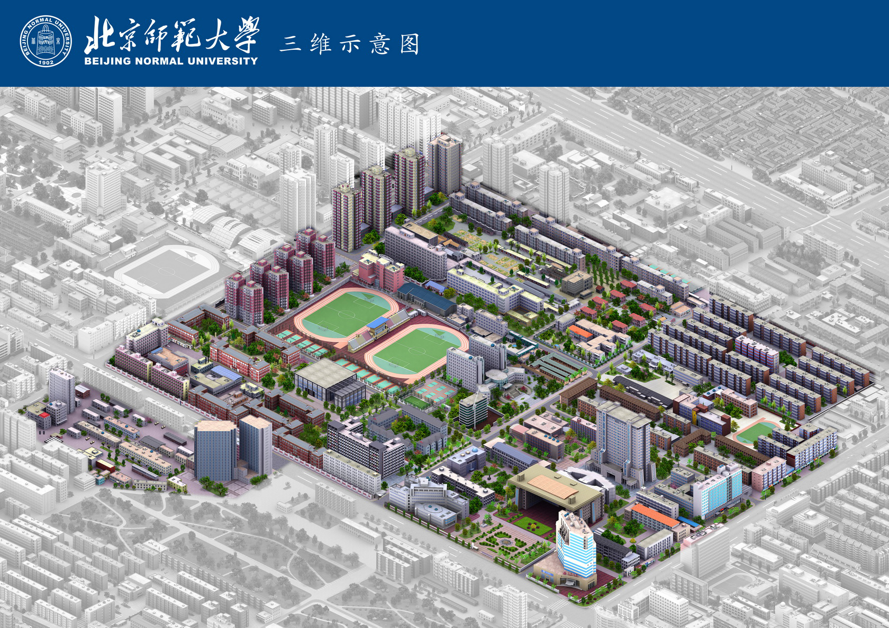

用户原图 · 年代未知 ·

校园总览 · 手工图示解读，背面与尺寸为推断
左键旋转 · 滚轮缩放 · 右键平移
左键旋转 · 滚轮缩放 · 右键平移

本次没有把这张透视图直接贴到地面，也没有声称完成摄影测量。以现有 OSM 轮廓定位，人工解读图中可见的配色、体量与结构，用参数化几何制作可旋转样板。未解读的 184 栋保持 v5。
| 可以尝试 | 目前不能确认 |
|---|---|
| 主楼大门廊与挑檐、体育馆屋盖 | 实际尺寸、背面、内部结构 |
| 深色横窗带、红砖、蓝白立面样式 | 真实材料、精确窗数、逐窗位置 |
| 低层—多层—塔楼高低关系 | 实测楼高、图示年代与当前一致性 |
分组区域和逐栋假设写在 v6 属性数据 中。原图与 2025 年卫星屋顶颜色存在差异，两种版本分别保留。本页不提供没有验证依据的“还原率”。